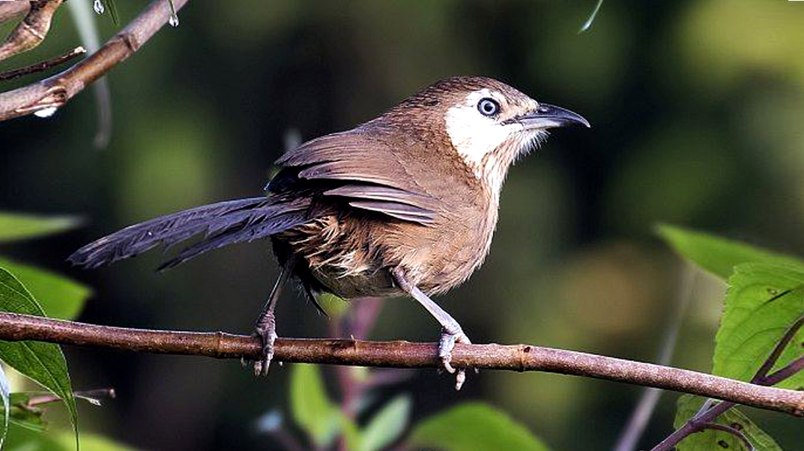
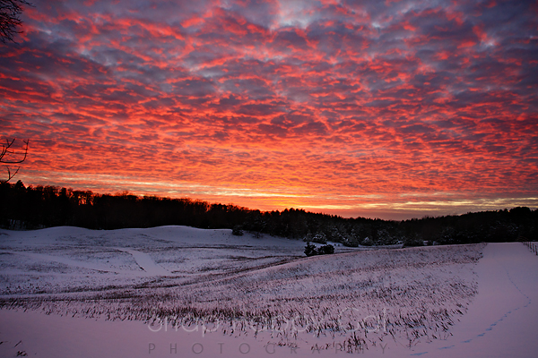

Mountain
This image shows the stunning beauty of Nepal's mountains. It’s a perfect example of Nepal’s natural splendor. The tall mountains of the Himalayas stand proudly against a clear blue sky, with snow on their peaks and rocky slopes, creating a stunning and peaceful view.

Kande Vyakur
The Kande Vyakur is a special bird found only in Nepal. It has a unique crest on its head and is a strong hunter, mostly feeding on snakes and small animals. This bird helps keep nature in balance by controlling the number of these creatures. The Kande Vyakur is an important part of Nepal's wildlife.

Sunset
As the sun sets, the sky is painted in warm hues of orange, pink, and purple. The clouds gently glow, reflecting the fading light, creating a peaceful and mesmerizing scene. The soft, fading colors blend into the horizon, while the clouds float gracefully, adding depth and beauty to the serene moment of the sunset.